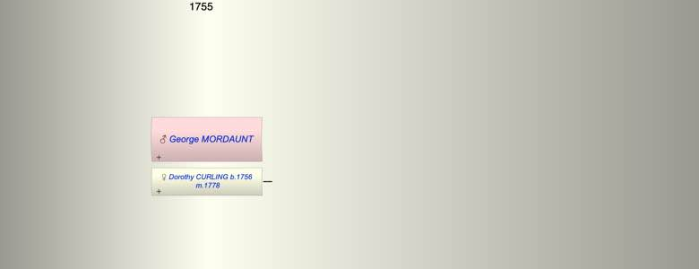

| [Index] |
| George MORDAUNT |
|  |
| m. 22 Dec 1778 Dorothy CURLING (1756 - ) at Holy Trinity Minories |
| Events in George MORDAUNT's life | |||||
| Date | Age | Event | Place | Notes | Src |
| 22 Dec 1778 | Married Dorothy CURLING (aged 22) | Holy Trinity Minories | Note 1 | ||
| Note 1: George Mordaunt of Trinity Minories and Dorothy Curling of St Mary Whitechapel by licence, witnesses George Curling and W? Mordaunt ex Ancestry London,
Marriages |
| Created on a Mac™ using iFamily for Mac™ on 8 Oct 2023 |